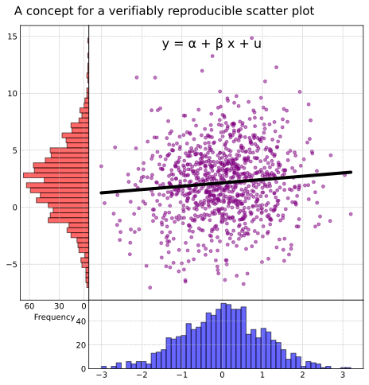

import pandas as pd
from reproduce_work import *╔ω: Setting reproduce.work config dir to ./reproduce.╔ω: Setting reproduce.work config dir to ./reproduce.╔ω: Registered notebook https://github.com/reproduce-work/reproduce-work/blob/main/nbs/03_paper.ipynb in reproduce/config.tomlimport numpy as np
import matplotlib.pyplot as plt
import statsmodels.api as sm
random_state = np.random.RandomState(2353)
# 1. Generating Data
# Generate 1000 random samples from a standard normal distribution for x-axis
x = random_state.randn(1000)
# Generate 1000 random samples from a gamma distribution for y-axis
# We'll use shape=2 and scale=1 for the gamma distribution as an example.
y = random_state.gamma(2, 1, 1000)
# add noise
u, v = random_state.randn(1000), random_state.randn(1000)
y = y + 0.3*(x + u) + 3*v
#plt.style.use('seaborn-whitegrid')
# 2. Scatter Plot
# Create a main figure and axes
fig = plt.figure(figsize=(8, 8))
# Define the proportions of the scatter plot and histograms
scatter_ax = plt.axes([0.2, 0.2, 0.6, 0.6]) # [left, bottom, width, height]
x_hist_ax = plt.axes([0.2, 0.05, 0.6, 0.15], sharex=scatter_ax)
y_hist_ax = plt.axes([0.05, 0.2, 0.15, 0.6], sharey=scatter_ax)
# Plot the scatter plot
scatter_ax.scatter(x, y, alpha=0.5)
scatter_ax.set_xlabel('Normal Distribution')
scatter_ax.set_ylabel('Gamma Distribution')
# 3. Histograms
# Plot the histogram for x-values
x_hist_ax.hist(x, bins=50, edgecolor='k', alpha=0.6, color='blue', orientation='vertical')
x_hist_ax.set_ylabel(' ')
x_hist_ax.set_title(' ')
# Add ticks at 0, 30, 60 for the frequency axis
x_hist_ax.set_yticks([0, 20, 40])
x_hist_ax.set_yticklabels([0, 20, 40])
# Plot the rotated histogram for y-values
y_hist_ax.hist(y, bins=50, edgecolor='k', alpha=0.6, color='red', orientation='horizontal')
y_hist_ax.set_title(' ')
# Remove ticks from the histograms
x_hist_ax.xaxis.set_tick_params(which='both', size=0)
x_hist_ax.yaxis.set_tick_params(which='both', size=0)
y_hist_ax.xaxis.set_tick_params(which='both', size=0)
y_hist_ax.yaxis.set_tick_params(which='both', size=0)
# Adjustments to the previous visualization:
# 1. Flipping the y-data histogram so that left corresponds to higher frequencies.
y_hist_ax.clear() # Clear the previous histogram
y_hist_ax.hist(y, bins=50, edgecolor='k', alpha=0.6, color='red', orientation='horizontal')
y_hist_ax.invert_xaxis() # Invert the x-axis to achieve the desired flipping
y_hist_ax.set_xlabel('Frequency')
# 2. For the scatter plot, use circle markers with the color purple
scatter_ax.clear() # Clear the previous scatter plot
scatter_ax.scatter(x, y, s=15, alpha=0.5, c='purple', marker='o')
scatter_ax.set_xlabel('Normal Distribution')
scatter_ax.set_ylabel('Gamma Distribution')
# compute slope and stats
# perform OLS regression
X = sm.add_constant(x)
model = sm.OLS(y, X).fit()
model_summary = (
model
.summary()
.tables[1]
.as_latex_tabular()
.replace('\n', ' ')
.replace('const', '$\\alpha$')
.replace('x1', '$\\beta$')
)
# extract coefficients and p-values
alpha, beta = model.params
p_alpha, p_beta = model.pvalues
p_alpha_str = f'{p_alpha:.3f}'
p_beta_str = f'{p_beta:.3f}'
scatter_ax.plot(x, alpha + beta*x, color='black', lw=4)
# Add ticks at 0, 30, 60 for the frequency axis
y_hist_ax.set_xticks([5, 30, 60])
y_hist_ax.set_xticklabels([0, 30, 60])
# Set a white background with grid
for ax in [scatter_ax, x_hist_ax, y_hist_ax]:
ax.set_facecolor('white')
ax.grid(True, which='both', linestyle='--', linewidth=0.5)
# add p-value and slope to plot
# alpha
scatter_ax.text(x=-1.5, y=14, s='y = α + β x + u', size=16)
# Add the SVG to the plot in the bottom right corner
plt.title('A concept for a verifiably reproducible scatter plot', size=15, pad=10, x=2.1, y=1.01)
# Display the updated plot
plt.show()
╔ω: Updated x in reproduce/pubdata.toml
╔ω: loading embedded link: https://github.com/reproduce-work/reproduce-work/blob/main/reproduce/pubdata.toml#x╔ω: Updated y in reproduce/pubdata.toml
╔ω: loading embedded link: https://github.com/reproduce-work/reproduce-work/blob/main/reproduce/pubdata.toml#yscatter_obj = publish_file('img/scatter_plot.pdf', metadata={
'plot': True,
'description': 'Scatter plot with OLS model line from regression of y on x',
'badge': 'reproduce-work-logo',
'plot_data': {
'x': x_obj.metadata['published_url'],
# can automatically render published objects to be cross-referenced in the metadata
'y': y_obj, # <-- is of PublishedObj type; gets rendered as y_obj.metadata['published_url']
'alpha': alpha,
'beta': beta,
'p_alpha': p_alpha,
'p_beta': p_beta
}
})╔ω: loading embedded link: https://github.com/reproduce-work/reproduce-work/blob/main/reproduce/pubdata.toml#y
╔ω: loading embedded link: https://github.com/reproduce-work/reproduce-work/blob/main/reproduce/pubdata.toml#scatter_plot_1749877bmodel_summary_metadata = {
'description': 'OLS Model Summary from regression of y on x',
'badge': 'reproduce-work-logo',
'model_data': {
'x': x_obj,
'y': y_obj,
},
'plots': [scatter_obj]
}
model_pub_obj = publish_data(
model_summary, 'ols_model_summary',
metadata=model_summary_metadata
)╔ω: loading embedded link: https://github.com/reproduce-work/reproduce-work/blob/main/reproduce/pubdata.toml#x
╔ω: loading embedded link: https://github.com/reproduce-work/reproduce-work/blob/main/reproduce/pubdata.toml#y
╔ω: loading embedded link: https://github.com/reproduce-work/reproduce-work/blob/main/reproduce/pubdata.toml#scatter_plot_1749877b
╔ω: loading embedded link: https://github.com/reproduce-work/reproduce-work/blob/main/reproduce/pubdata.toml#ols_model_summary╔ω: modify_links(3, https://github.com/reproduce-work/reproduce-work/blob/main/reproduce/pubdata.toml, https://github.com/reproduce-work/reproduce-work/blob/main/reproduce/pubdata.toml#L1-L11)
╔ω: modify_links(15, https://github.com/reproduce-work/reproduce-work/blob/main/reproduce/pubdata.toml, https://github.com/reproduce-work/reproduce-work/blob/main/reproduce/pubdata.toml#L13-L23)
╔ω: modify_links(27, https://github.com/reproduce-work/reproduce-work/blob/main/reproduce/pubdata.toml, https://github.com/reproduce-work/reproduce-work/blob/main/reproduce/pubdata.toml#L25-L35)
╔ω: modify_links(46, https://github.com/reproduce-work/reproduce-work/blob/main/reproduce/pubdata.toml, https://github.com/reproduce-work/reproduce-work/blob/main/reproduce/pubdata.toml#L37-L48)
╔ω: modify_links(51, https://github.com/reproduce-work/reproduce-work/blob/main/reproduce/pubdata.toml, https://github.com/reproduce-work/reproduce-work/blob/main/reproduce/pubdata.toml#L50-L59)
╔ω: modify_links(73, https://github.com/reproduce-work/reproduce-work/blob/main/reproduce/pubdata.toml, https://github.com/reproduce-work/reproduce-work/blob/main/reproduce/pubdata.toml#L61-L75)
╔ω: modify_links(81, https://github.com/reproduce-work/reproduce-work/blob/main/reproduce/pubdata.toml, https://github.com/reproduce-work/reproduce-work/blob/main/reproduce/pubdata.toml#L77-L89)
╔ω: modify_links(65, https://github.com/reproduce-work/reproduce-work/blob/main/reproduce/pubdata.toml, https://github.com/reproduce-work/reproduce-work/blob/main/reproduce/pubdata.toml#L13-L23)
╔ω: modify_links(65, https://github.com/reproduce-work/reproduce-work/blob/main/reproduce/pubdata.toml#y, https://github.com/reproduce-work/reproduce-work/blob/main/reproduce/pubdata.toml#L25-L35)
╔ω: modify_links(80, https://github.com/reproduce-work/reproduce-work/blob/main/reproduce/pubdata.toml#scatter_plot_1749877b, https://github.com/reproduce-work/reproduce-work/blob/main/reproduce/pubdata.toml#L61-L75)
╔ω: modify_links(92, https://github.com/reproduce-work/reproduce-work/blob/main/reproduce/pubdata.toml#x, https://github.com/reproduce-work/reproduce-work/blob/main/reproduce/pubdata.toml#L13-L23)
╔ω: modify_links(93, https://github.com/reproduce-work/reproduce-work/blob/main/reproduce/pubdata.toml#y, https://github.com/reproduce-work/reproduce-work/blob/main/reproduce/pubdata.toml#L25-L35)